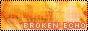
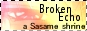
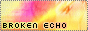

L I N K B R O K E N E C H OBelow are some buttons I've provided for you if you want to link BE. If you would like to contribute any, please
e-mail me. Please direct all links to
http://pretear.org/sasame :)
  
-----------------------------------------
Broken Echo is an AinoyumeNET production. Pretear was created by Kaori Naruse and Junichi Sato, © 2001. All rights reserved.